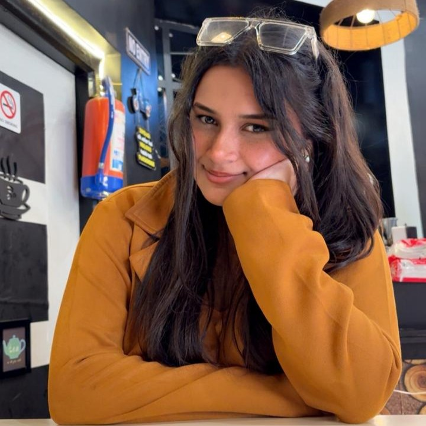

Creative Storyteller & Digital Enthusiast
I bring fresh ideas, engaging content, and a deep understanding of audience behavior to help brands connect meaningfully with their followers.

About Me
I'm a creative storyteller and digital enthusiast with a passion for building strong online communities. As a content writer, I aim to bring fresh ideas and engaging content to help brands connect with their followers.
Currently pursuing a Bachelor of Journalism and Mass Communication from Graphic Era Hill University, I'm looking for an opportunity where I can grow, experiment, and make a real impact through smart strategy and creativity.
Experience
Content Writer Intern — BuzzCraft Digital Agency
March 2025 - May 2025 | Remote
- Created and copy-edited SEO-optimized content for blogs, social media, and marketing campaigns.
- Researched topics and tailored writing to diverse client industries.
- Collaborated with teams to align content with brand voice and marketing goals.
Content Writer Intern — Youth Connect India
August 2024 - January 2025 | Remote
- Designed and scheduled multi-platform content calendars (Instagram, Facebook, Twitter).
- Collaborated with the design team to create reels, carousels, and story highlights.
- Conducted competitive analysis and trend research to align content with audience interests.
PR & Communications
- Assisted in crafting press releases and media kits.
- Managed social media accounts and engagement strategies.
- Helped organize promotional events and influencer outreach.
My Portfolio & Projects
A selection of projects that showcase my writing and content creation skills.

The Real Truth of Life
A simple, honest story.

Why Reading Books Empowers Us
Exploring how pages transform our mind and body.
My Skills
Content Creation
Copywriting
Scriptwriting
Public Relations
Social Media
Brand Communication
Event Planning
Creative Thinking
Testimonials
“Gargi consistently delivers well-researched, insightful articles that connect with our readership.”
— E-Magazine Editor
“Her writing style is fresh, clear, and always impactful.”
— Literary Club Faculty Advisor